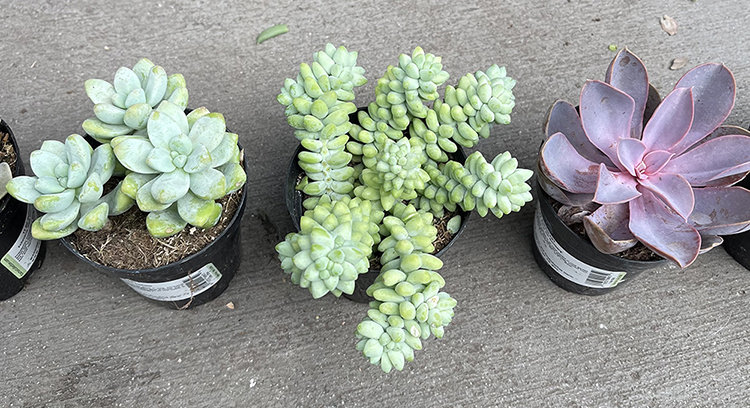
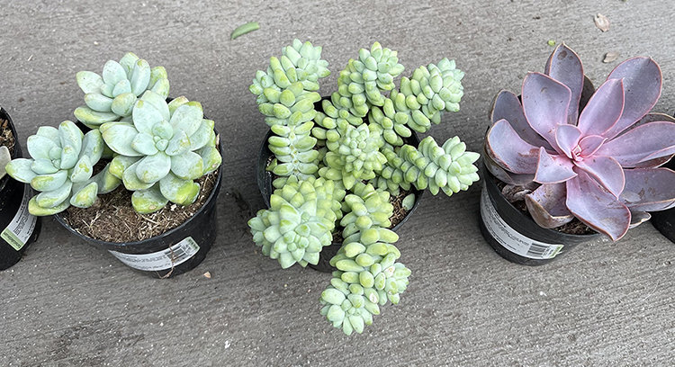
Josh has recently become a big plant enthusiast, and lately has been spending more and more time building up his collection, which consists mainly of succulents. He loves finding small, cute, pastel colored succulents, such as the purple and blue Korean succulents found below. He often takes weekly trips to plant or gardening shops around the city, searching for the next treasure to add to his collection. Some of his favorite places to go for the best prices and selection include Succulence, Lowes, and Golden Gate Park's local nursery.
<<<<<<<<< Temporary merge branch 1 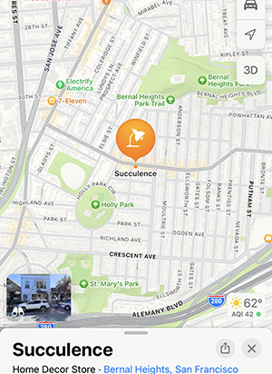 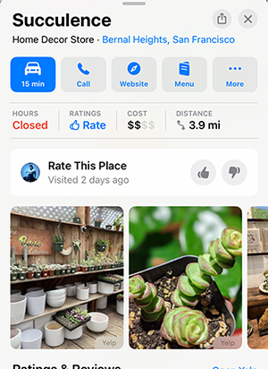 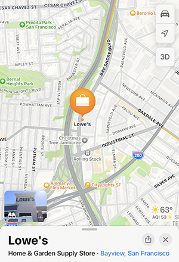
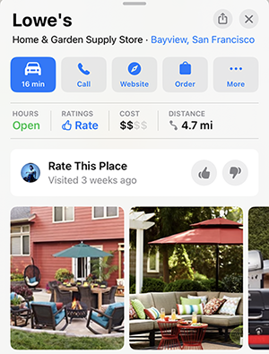
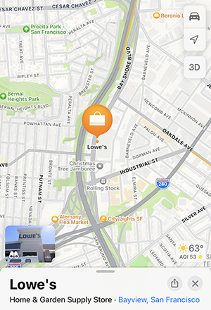
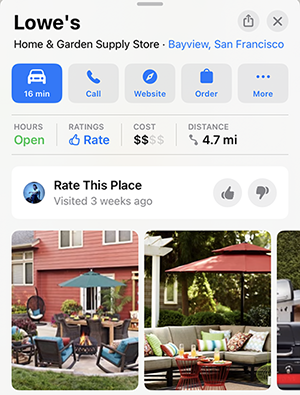
 =========
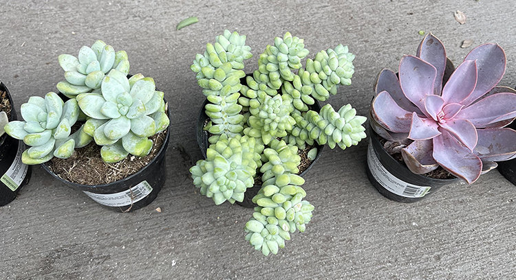
=========
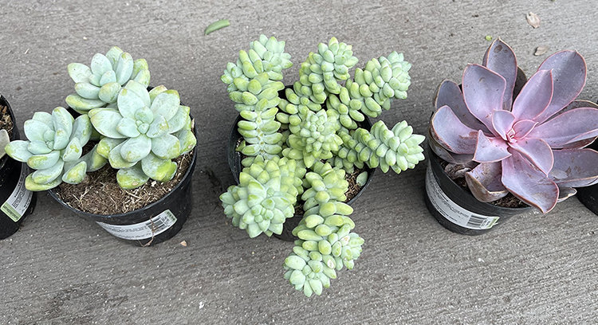
 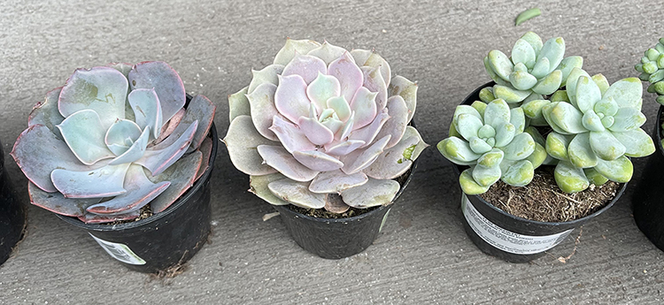
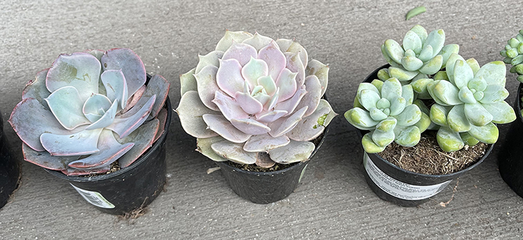
In addition to finding beautiful additions to his miniature succulent garden, Josh also enjoys the process of designing the arrangement of his plants and adding extra fixtures to create a cohesive space. As a huge Studio Ghibli fan and child at heart, he loves to add extra visual centerpieces and accessories that fit this theme. At the center of his Ghibli garden, he has an iconic Totoro with a Baby's Necklace growing out of his planter. As the true centerpiece to his mini garden, however, he has a fully functional fountain that circulates water through a series of waterfalls around a sculpted miniature house. The fountain includes an LED light and a fog machine that offers humidity to his plants while also creating a beautiful aesthetic. He loves waterfalls and water fixtures, and eventually added an additional desktop fountain to his workdesk.
<<<<<<<<< Temporary merge branch 1 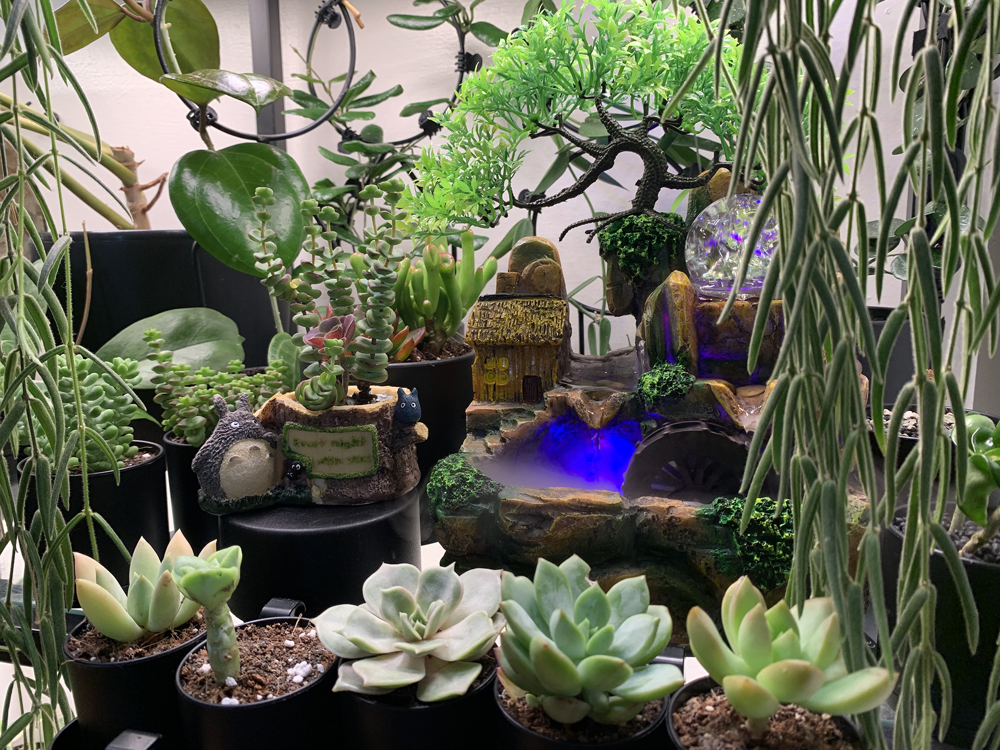 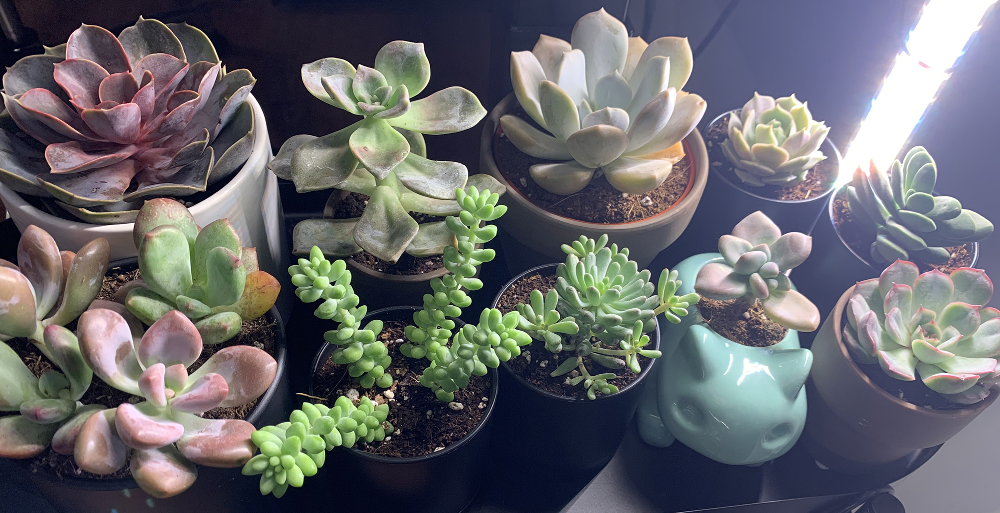 =========Sometimes he and his partner take a break from all the gardening to just enjoy being outside in nature, and frequently go to Golden Gate Park for an afternoon picnic, or to stop by the Conservatory of Flowers to see what exotic plants are in bloom.
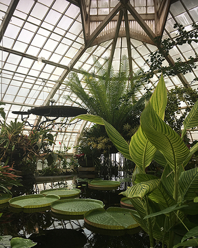 <<<<<<<<< Temporary merge branch 1 ========= >>>>>>>>> Temporary merge branch 2